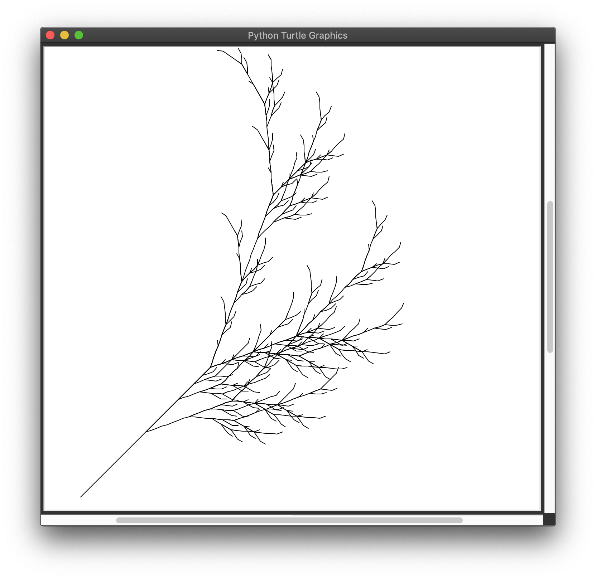

26. Projet : Une plante fractale⚓︎
But
Le but de ce projet d'une durée de deux heures est d'obtenir le dessin d'une plante fractale comme celui ci-dessous.

Pour cela, nous utiliserons le formalisme dit de Lindenmayer (dit L-système).
Important
Le travail est décomposé en plusieurs exercices corrigés.
Au fur et à mesure de votre avancée,
- vérifier votre travail grâce au petit gendarme (à droite de la flèche de téléversement) ;
- copier vos fonctions sur Thonny ;
- faites la partie Turtle sur Thonny.
26.1 Présentation du projet⚓︎
Pour créer des fractales avec un système de Lindenmayer, on part d'un tableau contenant un ensemble de lettre. appelée axiome. Pour une plante fractale, l'axiome est "X".
À partir de cet axiome et en appliquant de règles de transformation, on construit un tableau de lettres de plus en plus grand.
Pour une plante fractale, les règles sont :
- "X" devient "F+[[X]-X]-F[-FX]+X"
- "F" devient "FF"
- n'importe quelle autre caractère est inchangée.
À titre d'exemple, si on prend pour axiome ['F', 'X', 'A'], le code devient :
- étape 1:
['F', 'X', 'A'] - étape 2:
['F', 'F', 'F', '+', '[', '[', 'X', ']', '-', 'X', ']', '-', 'F', '[', '-', 'F', 'X', ']', '+', 'X', 'A'] - étape 3:
['F', 'F', 'F', 'F', 'F', 'F', '+', '[', '[', 'F', '+', '[', '[', 'X', ']', '-', 'X', ']', '-', 'F', '[', '-', 'F', 'X', ']', '+', 'X', ']', '-', 'F', '+', '[', '[', 'X', ']', '-', 'X', ']', '-', 'F', '[', '-', 'F', 'X', ']', '+', 'X', ']', '-', 'F', 'F', '[', '-', 'F', 'F', 'F', '+', '[', '[', 'X', ']', '-', 'X', ']', '-', 'F', '[', '-', 'F', 'X', ']', '+', 'X', ']', '+', 'F', '+', '[', '[', 'X', ']', '-', 'X', ']', '-', 'F', '[', '-', 'F', 'X', ']', '+', 'X', 'A']
Ce tableau va permettre de donner des instructions Turtle permettant de dessiner la plante fractale.
Ainsi :
- si on lit un "+", on tourne à droite de 25° ;
- si on lit un "-", on tourne à gauche de 25° ;
- si on lit un "F", on avance de 10 pixels ;
- si on lit un "[", on enregistre dans un tableau la position et l'angle actuel de la tortue ;
- si on lit un "]", on récupère à partir du tableau la position et l'angle de la tortue précédemment enregistré.
26.2 Partie 1 : création du tableau⚓︎
Exercice 1
En vous aidant des commentaires, écrire la fonction ajouter_lettre qui prend en paramètres :
- un tableau de lettres
Tde taillelen(T); - une lettre
lettre.
Cette fonction renvoie un tableau de lettres T de taille len(T) + 1.
Par exemple :
ajouter_lettre(['X', 'X', 'X'], '+')
['X', 'X', 'X', '+']
Exercice 2
Maintenant que nous pouvons ajouter une lettre à un tableau, nous devons créer une fonction permettant d'en ajouter plusieurs.
Écrire une fonction s'appelant ajouter_expression qui prend en paramètres :
- un tableau de lettres
Tde taillelen(T); - une expression
expressioncomposée de plusieurs lettres.
Cette fonction parcourt et ajoute tous les caractères contenus au sein d'une expression dans un tableau. Elle renvoie un tableau de lettres T de taille len(T) + len(expression).
Par exemple :
ajouter_expression(['X', 'X', 'X'], '+XF')
['X', 'X', 'X', '+', 'X', 'F']
Exercice 3
Maintenant que nous savons ajouter une expression à un tableau, nous devons créer une fonction permettant de passer d'une étape à la suivante. Pour cela, il faut créer un nouveau tableau à partir du tableau existant.
On va par exemple :
- à partir du tableau de l'étape 1, créer le tableau de l'étape 2 ;
- à partir du tableau de l'étape 2, créer le tableau de l'étape 3.
Écrire une fonction s'appelant générer_nouveau_tableau qui prend en paramètre :
- un tableau de lettres
Tde taillelen(T).
Cette fonction renvoie le nouveau tableau de lettres.
La stratégie est la suivante :
- cette fonction part d'un nouveau tableau
nouveau_tableauvide ; -
elle parcourt un par un tous les éléments du tableau :
- si l'élément est un
'X', on ajoute l'expression "F+[[X]-X]-F[-FX]+X" ànouveau_tableau; - si l'élément est un
'F', on ajoute l'expression "FF" ànouveau_tableau; - si l'élément est un autre caractère, on ajoute cette lettre à
nouveau_tableau.
- si l'élément est un
Par exemple :
générer_nouveau_tableau(['X'])
['F', '+', '[', '[', 'X', ']', '-', 'X', ']', '-', 'F', '[', '-', 'F', 'X', ']', '+', 'X']
Exercice 4
Finalement, il faut générer la plante à un certain degré de finesse.
Cela signifie que l'on cherche, à partir de l'axiome à créer la plante de l'étape 4, 5 ou 6. La finesse correspond au numéro de l'étape.
Écrire une fonction s'appelant générer_plante qui prend en paramètre :
- un tableau de lettres
axiome; - un degré de finesse
finesse.
Cette fonction renvoie la plante sous forme d'un tableau de lettres à un certain degré de finesse.
Par exemple :
générer_plante(['X'], 2)
renvoie
['F', 'F', '+', '[', '[', 'F', '+', '[', '[', 'X', ']', '-', 'X', ']', '-', 'F', '[', '-', 'F', 'X', ']', '+', 'X', ']', '-', 'F', '+', '[', '[', 'X', ']', '-', 'X', ']', '-', 'F', '[', '-', 'F', 'X', ']', '+', 'X', ']', '-', 'F', 'F', '[', '-', 'F', 'F', 'F', '+', '[', '[', 'X', ']', '-', 'X', ']', '-', 'F', '[', '-', 'F', 'X', ']', '+', 'X', ']', '+', 'F', '+', '[', '[', 'X', ']', '-', 'X', ']', '-', 'F', '[', '-', 'F', 'X', ']', '+', 'X']
26.3 Cours⚓︎
Cours
En Python, il est possible de gérer les tableaux de manière dynamique, en ajoutant et en retirant des éléments au tableau courant.
Les instructions pour réaliser ces opérations sont :
tableau.append(élément)ajoute un élément à la fin d'un tableau ;tableau.pop(0)retire le premier élément d'un tableau et renvoie sa valeur ;tableau.pop(-1)retire le dernier élément d'un tableau et renvoie sa valeur.
Exemple
Essayez-lez !
26.4 Partie 2 : Turtle⚓︎
Cette seconde partie se déroule uniquement sur Thonny.
Exercice 5
Nous allons maintenant dessiner la plante fractale !
Pour se faire, nous devons intégrer les lettres présentes dans notre tableau.
- Copier le code ci-dessous dans Thonny ;
-
Compléter la fonction
dessiner_plantequi prend pour paramètres :- un tableau de lettres
tableaugénérer grâce à la fonctiongénérer_plante; - une longueur
longueurcorrespondant à la longueur d'un trait.
Pour compléter cette fonction, allez voir l'interprétation des lettres en Tortue sur le lien wikipédia. On prendra la distance unitaire égale à 10 et l'angle égal à 25°.
- un tableau de lettres
Aide
Pour obtenir :
- la position actuelle de la tortue, on fait
turtle.pos(); - la direction actuelle de la tortue, on fait
turtle.heading().
Pour donner :
- une position à la tortue, on fait
turtle.setpos(position_à_donner); - une direction à la tortue, on fait
turtle.seth(direction_à_donner).
On pensera à lever le stylo avec turtle.penup() avant de replacer la tortue à son ancien emplacement, puis à le baisser avec turtle.pendown().
- Dessiner des plantes fractales et amusez-vous !